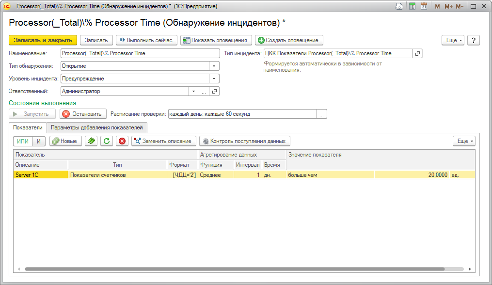

Справочник "Обнаружение инцидентов" предназначен для создания инцидентов при выходе показателей мониторинга за заданные границы.

Назначение реквизитов:
- "Наименование" - наименование обнаружения инцидента.
- "Тип инцидента" - значение типа инцидента, которое будет создано при обнаружении инцидента. Если данный реквизит не заполнен, то при записи будет автоматически создан новый тип инцидента по правилу: наименование нового типа инцидента будет равно "ЦКК.Показатели." + наименование текущего обнаружения инцидента.
- "Тип обнаружения" - значение типа обнаружения инцидентов, отвечающее за логику обнаружения. Возможные значения: "Открытие", "Закрытие" и "Открытие и закрытие". При значении "Открытие" будет открыт инцидент по срабатыванию условия "Значение показателя". При значении "Закрытие" будет закрыт инцидент по срабатыванию условия "Значение показателя". При значении "Открытие и закрытие" будет открыт инцидент по срабатыванию условия "Значение показателя" и закрыт, в случае если условие "Значение показателя" не выполнено.
- "Уровень инцидента" - уровень инцидента, с которым будет открыт инцидент. От уровня инцидента зависит период повторных оповещений. См. подсистему "Оповещения - Повторное оповещение".
- "Отвественный" - ответсвенный исполнитель по данному обнаружению инцидентов.
Для показателей возможны следующие виды сравнения:
- Сравнение с фиксированной величиной - инцидент будет открываться если указанный показатель окажется больше, меньше указанной вами величины или между указанными величинами.
- Сравнение со значением показателя в прошлом - необходимо указать сдвиг в прошлое, который будет использоваться для сравнения, а также абсолютное или относительное значение изменения. Инцидент будет открыт, если текущее значение показателя на указанное количество единиц или процентов отличается в большую или меньшую сторону от базового значения.
Команда "Заменить описание" предназначена для групповой замены наименования выделенных показателей табличной части. Осуществляет поиск указанной строки в наименовании показателя и ее замены на указанную.
Подвал формы предназначен для изменения нескольких реквизитов табличной части. Для этого необходимо выделить необходимые строки табличной части и изменить необходимый реквизит в подвале формы.
См: Общая схема работы с инцидентами в ЦКК.